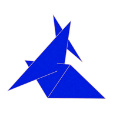
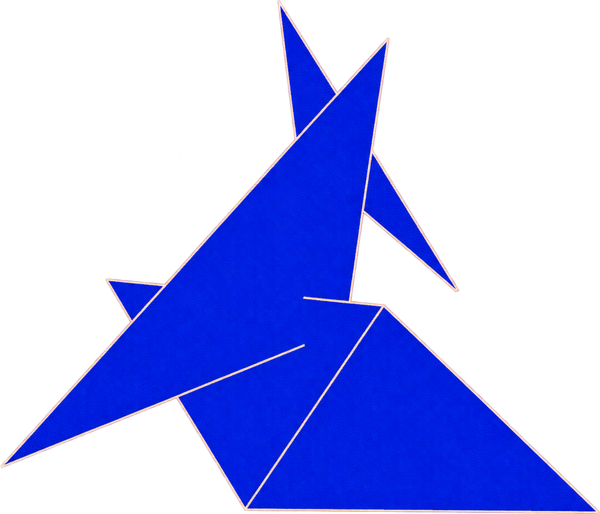
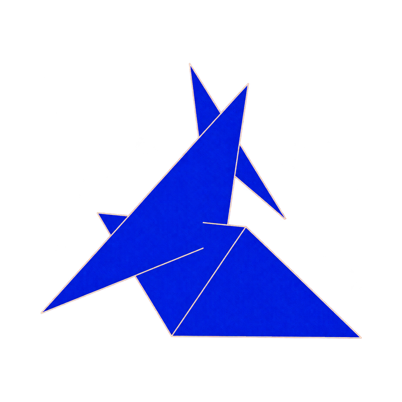
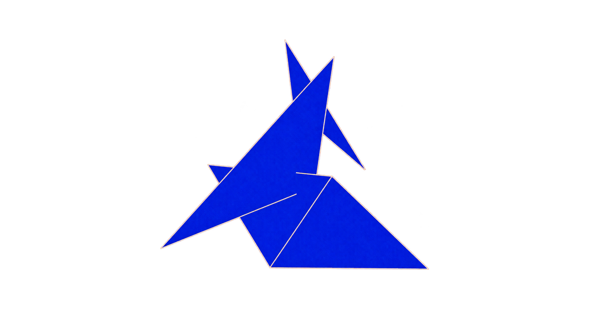

After · animation mark
Current source: src/app.html and static assets
Preview simulations from the actual tags. These are not screenshots from social services. Crops, text, and cached images can differ.
Browser and device assets
Luke Floden · 16 px
Luke Floden · 32 px
Apple · 180 px · white
Manifest · 192 / 512 px
Source · transparent Search result simulation
www.lukefloden.comLuke FlodenLuke Floden's personal site. Web demos, a portfolio, and a short about page.
Social card simulations
X / Twitter · square thumbnail

www.lukefloden.comLuke FlodenLuke Floden's personal site. Web demos, a portfolio, and a short about page.
Slack · Open Graph

www.lukefloden.comLuke FlodenLuke Floden's personal site. Web demos, a portfolio, and a short about page.
Facebook · Open Graph
www.lukefloden.comLuke FlodenLuke Floden's personal site. Web demos, a portfolio, and a short about page.
LinkedIn · Open Graph
www.lukefloden.comLuke FlodenLuke Floden's personal site. Web demos, a portfolio, and a short about page.
Discord · Open Graph
www.lukefloden.comLuke FlodenLuke Floden's personal site. Web demos, a portfolio, and a short about page.
Messages / other Open Graph readers · Open Graph
www.lukefloden.comLuke FlodenLuke Floden's personal site. Web demos, a portfolio, and a short about page.
Scope
The shared head covers /home, /about, /portfolio, and child routes. The title and description remain the same on each route.
The logo stays blue in both themes. Transparent browser icons retain the page or browser background. Social images use white backgrounds.